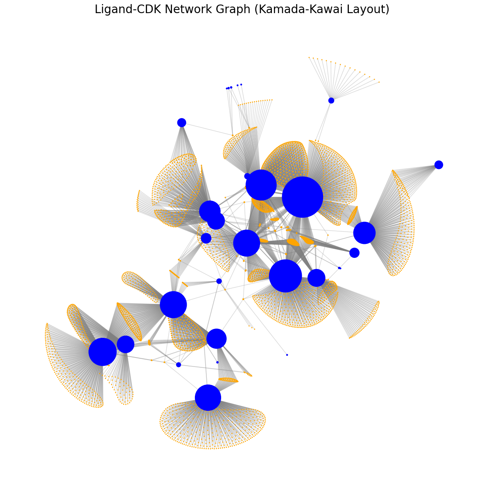
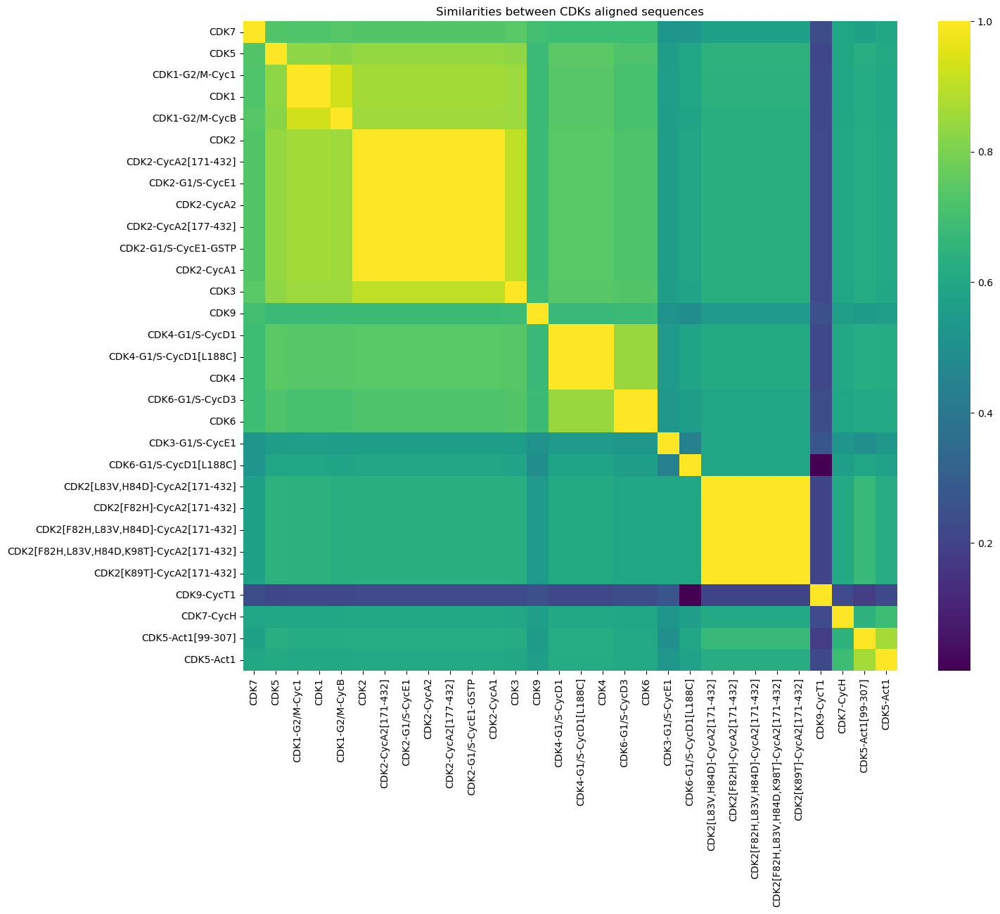
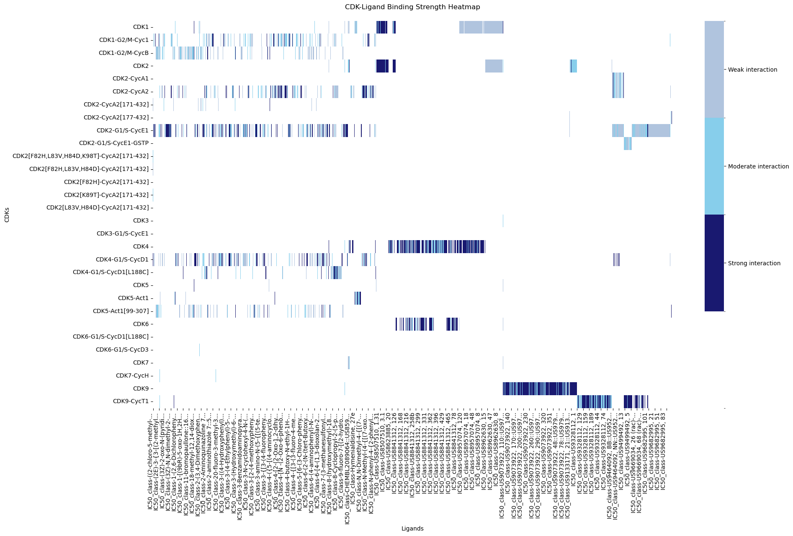
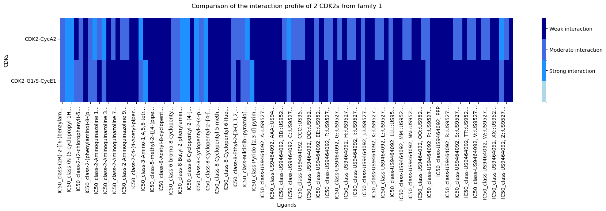
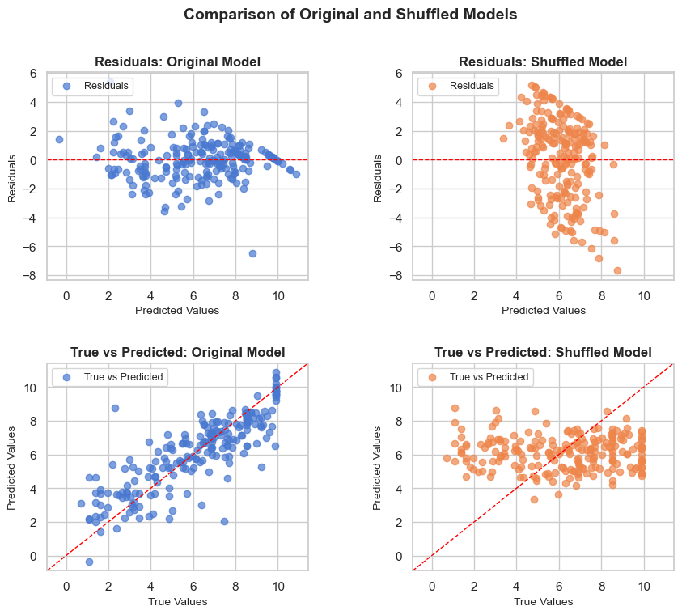
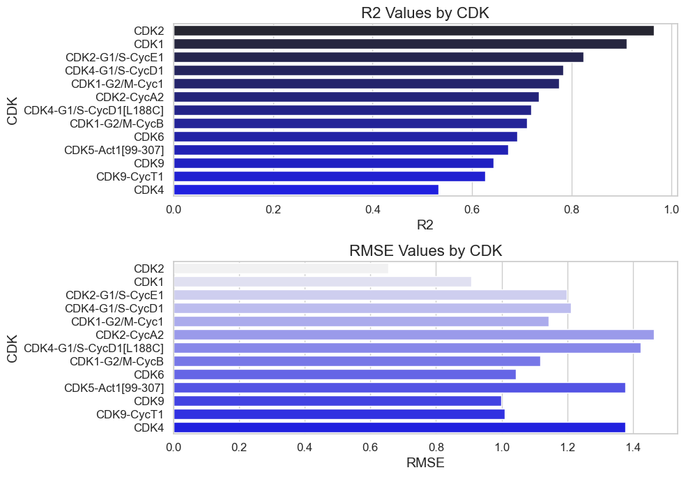
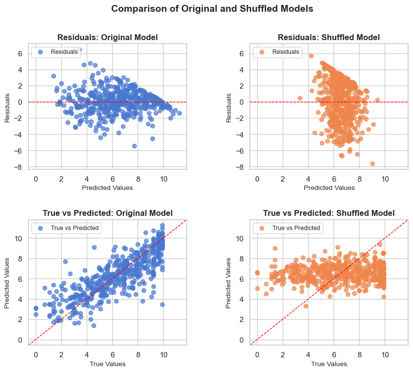
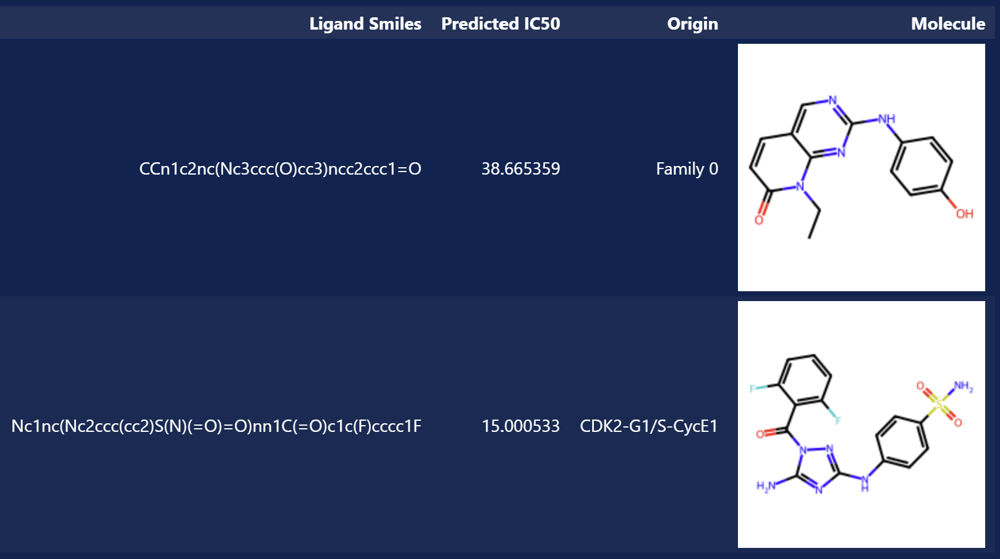

Shutting Down the Cell Cycle: Potential of CDK Inhibitors in Cancer treatment
Research question
Could we find potential inhibitors of CDKs?
Introduction
To answer this research question, we utilized a preprocessed version of the BindingDB dataset and we found interaction measures between CDKs and many different ligands and more precisely, ligands that might inhibit CDKs.
We can visualize all the CDKs as blue spheres and the ligands they interact with as orange dots. The grey lines connecting them indicate the availability of affinity measurements for each molecule pair. The more connections a particular CDK has, the larger the size of its corresponding blue sphere. From this plot, it is evident that our data is heterogeneous: we have abundant information for some CDKs, while considerably less is available for others.
Let’s study these interactions and let’s find a cure for cancer!
CDKs: Can we sort them by families?
To find potential inhibitors of CDKs functions, we first need to know more about these kinases. In our database, we have 30 different CDKs and for each, the amino-acid sequences of their chains. Are they all different enough that every potential ligand would bind differently to each CDK? Or do they have similarities that could allow us to classify them into families? Indeed, we can imagine that CDKs with similar sequences would have a similar interaction profile with their ligands. Admitting this hypothesis, we could conclude that ligands having a strong interaction with a given CDK would also have a significant interaction with CDKs of the same family.
Moreover, we could also make the hypothesis that CDKs with similar sequences (CDKs within a same family) have similar functions in the cell cycle. This assumption would allow us to find an inhibitor targeting several CDKs and therefore inhibiting a given step of the cell cycle.
The most obvious thing we could do to create these families, is to look at the amino acid sequences of the 30 CDKs.
To do so, we compare the amino acid sequences by aligning their conserved regions. This can be done by Multiple sequence alignment, a method biologically accurate, which inserts gaps into the sequences to align them correctly taking into account their evolutionary and structural homology.

From this plot and using these similarity results, could we sort the CDKs into families?
We obtain 5 families of CDKs that we can now use to study the CDKs-Ligands interaction!
How do the CDKs bind to their ligands?
By studying the interactions between ligands and CDKs, we are interested in finding ligands inhibiting the CDKs strongly.
To achieve this, we classify the interaction strength between the ligands and their CDKs, using the IC50 values- the concentration of an inhibitor that reduces the enzymatic activity of the CDK by 50%. We qualitatively sort these values into 3 classes: strong, moderate and weak.

The heatmap first confirms the heterogeneity of the data. Some ligands' interactions have been measured with only some CDKs but not all. And paradoxically, some of the CDKs show homogeneous data: only strong interaction or only weak interaction for instance. Therefore, in some cases, it will not be possible to compare the ligand/CDKs interactions. But let’s look into the interaction profiles of CDKs with similar data.
Do CDKs of the same family have a similar interaction profile with their ligands? Let’s compare two CDKs and assess their similarity.

This map reveals that the 2 interaction arrays are 86.07% (depending on the one you chose) similar! This supports our hypothesis that CDKs within the same family can exhibit similar interaction profiles. Consequently, a specific ligand may potentially bind with comparable strength to multiple CDKs belonging to that family.
Now that we studied the targets for our potential drug against cancer, let's focus on the inhibitor itself: the ligand.
The only information we have on the ligands' nature is their SMILES giving structural information about the molecule. We aim to determine whether ligands with high affinity for a CDK share common structural features. Identifying such patterns would significantly advance our progress in developing an effective inhibitor.
To investigate similarities between SMILES's ligands, we compare their Tanimoto similarity coefficients.You will find more about Tanimoto following this this link. Here are two plots showing the SMILES similarities between ligands that bind strongly to CDK2.
We can qualitatively see a very low similarity; only 2.43% of the ligands are more than 85% similar in structure. Unfortunately, comparing all the ligands as a control gives us a close value of similarity of 2.18%. We can therefore not admit that there are more similarities in the SMILES of ligands having the same types of interaction.
We conclude that it is not significant enough to consider the SMILES similarities as a criteria to conclude on the inhibition property of the ligand.
CDKs/ligands affinity: designing a prediction model
In order to find a potential inhibitor for the CDKs, we want to build a prediction model which would give us the affinity of an input molecule with a given CDK. For this purpose we construct a QSAR model based on linear regression. In short the model takes the SMILES of a ligand, vectorizes it and makes use of these vectorizations as features (X) with the dependent variable being the IC50 values (Y).
Single Protein Model
A unique model is created for each CDK. Let’s see if our models perform better than a random shuffled model. Here we will see one model on the CDK2:

Amazing, we have created a model that can predict affinity scores of a ligand on a specific protein! But how good our models are at predicting? Let’s look closer to their R2 and RMSE values.

As we can see the different models show a good potential for predicting the binding affinity of a ligand!
However, some of the CDKs models like CDK2 have very high R2 values but low RMSE values on the training set, meaning it is likely that they overfit, resulting in poorer predictive performance. The R2 values are nonetheless in the range [0.5:0.95], an ideal range to explain the variability of the data, encouraging us to use these models anyway.
For the specific CDK, CDK2-G1/S-CycE1, we can see that the model is performing well. So let us now try and predict the binding affinity of a 1000 random ligands to this protein.
Our model seems to perform reasonably for these ligands. It predicts low values of IC50, allowing us to isolate potential strong inhibitors against the CDK.
Here we used a model for CDK2 and we predict that the CDK will have a very high binding affinity (low IC50) with some ligands. Our model tells us it is very likely that we found a great inhibitor!
Proteins of a family model
Based on the CDKs sequence alignment research we discovered that it was possible to cluster the proteins into 5 different families. Based on the assumption that if proteins have a similar structure to a high degree, their binding affinity to a ligand should be somewhat similar. This approach could be effective to discover ligands that may bind well to multiple proteins in the same family. Hence, further prevent development of the cancer cell.
We use our model on several families of CDKs. In the visual representation of the results, we choose to show a specific family which is composed of a lot of CDK2 known to ensure the switch between phases G1 and S of the cell cycle.
The models now predict the binding affinity of a ligand to a family of proteins. This is amazing! Now that the models are built, let’s predict the affinity of some random molecules from our data, to one of the families.
The prediction gives us that this CDK family will have a very high binding affinity (low IC50) with some ligands. Our model tells us it is very likely that we found a great inhibitor!
From the results of these 2 models (Single protein and Family proteins models), what are the best inhibitors that we discovered?
Below are the molecular structures of the two best inhibitors targeting respectively a given family (family 1, mainly composed of CDK2 variants) and a specific CDK (CDK2-G1/S-CycE1), obtained with our models!
Conclusion
At the end of this project, we have been able to build a model to predict the affinity of a molecule with specific CDKs or families of CDKs. Notably, we identified a potential inhibitor targeting a family of CDKs in which some (CDK2s) ensure a phase switch in the cell cycle. By preventing this transition, the inhibitor has the potential to interrupt cell division and halt uncontrolled cell proliferation, aligning perfectly with the objective of our investigation.
Now, let's meet in the lab to experimentally test the effect of these inhibitors, potential new drugs for cancer. Who knows, this molecule might become one of the drugs in the next clinical trials against cancer!